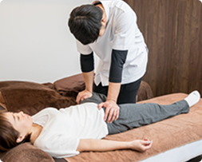

整体roomてのひらのサイトを見ていただきありがとうございます。
院長の久原（ひさはら）でございます。
てのひらは宜野湾市にある自宅整体サロンです。
毎日頑張っている方の心と身体を癒すことができるように、
前原の地で日々努めてまいります。
お身体の気になることやご不安なことがございましたら
お気軽にご相談ください。
ごあいさつ
はじめまして。
院長の久原（ひさはら）でございます。てのひらは宜野湾市にある自宅整体サロンです。
毎日頑張っている方の心と身体を癒すことができるように、前原の地で日々努めてまいります。
お身体の気になることやご不安なことがございましたらお気軽にご相談ください。
用語解説

整体とは
体を支える中心となる骨盤や背骨を整え、骨のズレなどを矯正することによって筋肉のコリや疲労をほぐし、 体全体のバランスを整えます。 痛みを発症している箇所だけではなく、体全体のバランスを整えますので体の痛みが緩和されることはもちろんのこと、 痛みの再発を防いだり、遅らせたりできることが特徴的です。
整体とは
体を支える中心となる骨盤や背骨を整え、骨のズレなどを矯正することによって筋肉のコリや疲労をほぐし、体全体のバランスを整えます。
痛みを発症している箇所だけではなく、体全体のバランスを整えますので体の痛みが緩和されることはもちろんのこと、
痛みの再発を防いだり、遅らせたりできることが特徴的です。

カイロプラクティックとは
アメリカで考案された手技療法で、主に脊椎やその他の身体部位を調整（矯正）することにより、
内臓をはじめとして身体のさまざまな不調を矯正して身体機能を回復させようとするものです。
アメリカやEU諸国などでは国家資格として認められており医療に準ずるものとして幅広く利用されています。
カイロプラク
ティックとは
アメリカで考案された手技療法で、主に脊椎やその他の身体部位を調整（矯正）することにより、
内臓をはじめとして身体のさまざまな不調を矯正して身体機能を回復させようとするものです。
アメリカやEU諸国などでは国家資格として認められており医療に準ずるものとして幅広く利用されています。
ホットストーンとは
50℃～60℃に温めたストーン（石）を、背中、腰、足、手などに置いたり、
オイルを塗布したストーンを筋肉の流れに沿って体の上で滑らせたりする
トリートメントです。
この温熱効果とストーンの重みで筋肉の緊張をやわらげ、血液やリンパの流れを促進します。
深いヒーリングへと導いてくれることから、肩こりや冷え性・むくみ・不眠などのケアに最適です。
ホットストーン
とは
50度～60度に温めた石を、背中、腰、足、手などに置いたり、筋肉の流れに沿って体の上で滑らせたりするトリートメントです。
この温熱効果とストーンの重みで筋肉の緊張をやわらげ、血液やリンパの流れを促進します。
深いヒーリングへと導いてくれることから、肩こりや冷え性・むくみ・不眠などのケアに最適です。
こんなお悩みはありませんか？
毎日仕事で座りっぱなし
デスクワークで運動不足が気になる
パソコンやスマホをよく使う
姿勢や骨盤の歪みが気になる
出産後の体のメンテナンスをしたい
家事や育児で疲れた体を癒したい
冷えやむくみが気になる
とにかくリラックスしたい

過去に激しい運動でケガをした
日常的にハードな運動をしている
体の可動域を広げたい
部活や習い事で体を使う学生さん
身体の調子が悪いと何をするにも憂鬱になりますよね。
整体roomてのひらは『なんとなく調子が悪い』という時に気軽に
ご相談いただける場所を目指しています。
お仕事や家事に育児、部活や趣味のスポーツで毎日頑張っている
お身体のメンテナンスをしてみませんか？
気になることがございましたらお気軽にお問い合わせください。
よくある質問